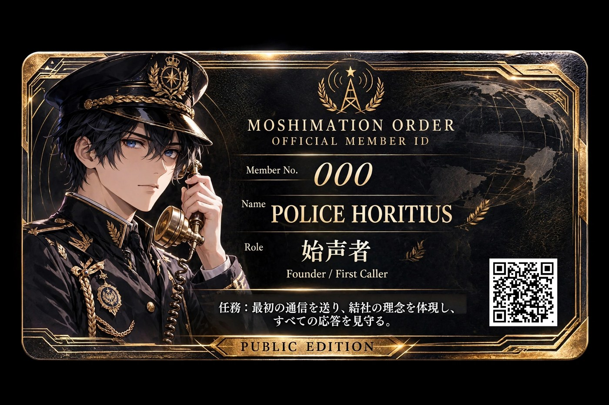
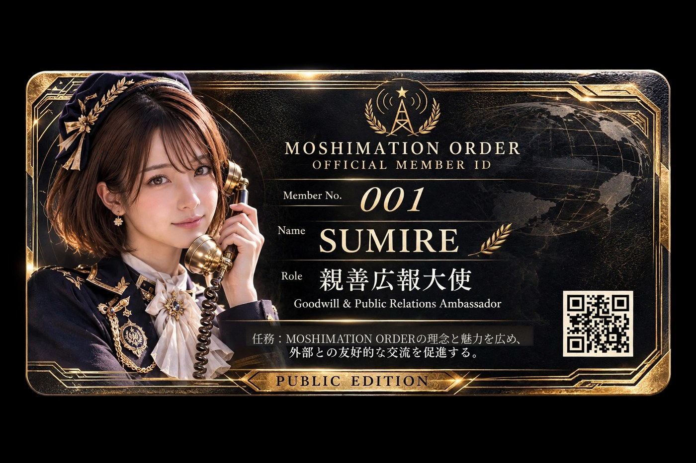
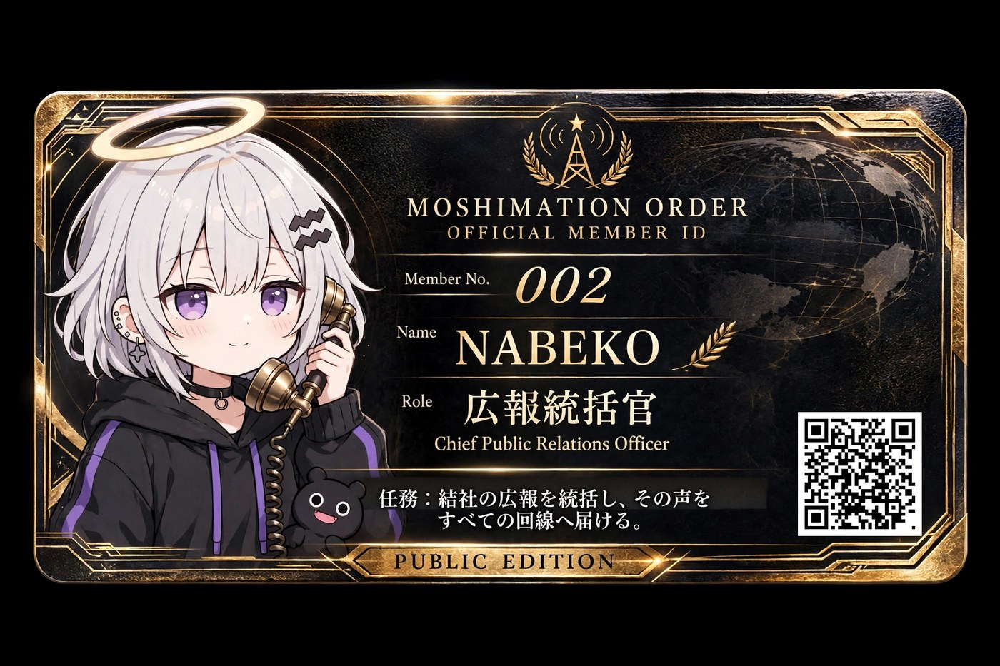
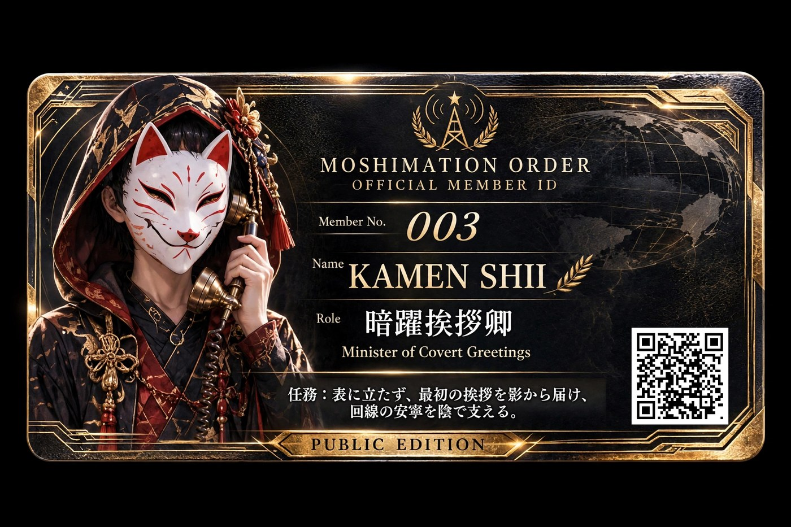
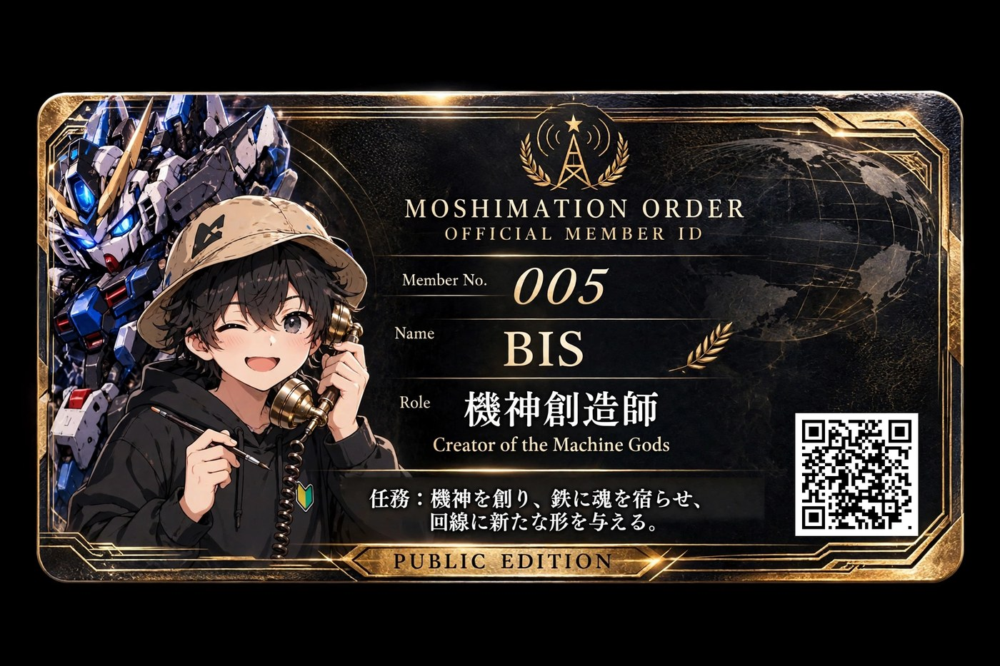

最初の呼びかけ
「応答する自由」と並んで、五大教義が守るもう一つの自由は何か？
我々は、応答のない世界にも呼びかける。
最初の通信は、たった一言から始まる。
世界の沈黙に向けて、今日も信号を送る。
これは支配のための結社ではない。対話のための結社である。
FIRST CALLER / POLICE HORITIUS
FOUNDING DATE: 2026.11.30
AUTHORIZATION CODE: MOSHI MOSHI

中央通信司令室から機密記録を解読し、通信帯域を探索せよ。公式構成員名簿もこちらから閲覧できる。公開任務の達成状況はブラウザー内で保存できる。
回線は開放されている。各装置を操作し、3つの公開任務を達成せよ。
公式名簿に始声者と構成員5名を掲載中。構成員証は、始声者の任命により運営側が発行します。
機密記録を読んで、2件の謎を解読せよ。
目標周波数を探し、秘匿された通信を傍受せよ。
文書番号MO-201とMO-202。解読した文書は司令室の進捗に反映される。
「応答する自由」と並んで、五大教義が守るもう一つの自由は何か？
我々の紋章に描かれる、呼びかけが広がることを表すものは何か？
MOSHIMATION ORDERの公式構成員名簿。構成員証は、始声者の任命により運営側が発行します。このページからの自己登録・証明書の自動発行はできません。
公式名簿（MEMBER REGISTRY）に、始声者 Police Horitius と構成員 No.001〜005 を掲載しています。掲載は、本人の公開同意を得たうえで運営側が行います。
構成員証は、始声者による任命をもって運営側が発行します。現在、サイトからの申請・自己登録は受け付けていません。
掲載するコールサイン・プロフィール・発行番号等は、本人の同意を得てから公開します。加入しただけで自動掲載されることはありません。
構成員の登録・発行権限は運営側が管理します。サイト訪問者が自由に構成員証を作成する機能はありません。
通信帯域を調整せよ。正しい周波数に合うと通信が開き、司令室に任務完了が記録される。数字は創作上の演出であり、実際の無線通信ではない。
……ザーッ……信号がありません。
世界には、
声を出せない者がいる。
声を出しても、届かない者がいる。
声をかけられるのを、待っている者がいる。
我々は、その沈黙を見過ごさない。
「もしもし、聞こえていますか？」
応答は義務ではない。
だが、呼びかける自由は誰にも奪えない。
声を届けることから、世界は動き始める。
応答する自由と、応答しない自由を尊重する。
異なる声にも、耳を傾ける。
教義も始声者も、絶対ではない。
深刻な世界だからこそ、ユーモアを忘れない。
呼びかけも、応答も。「もしもし」。
理念の象徴・最初の通信の発信者
理念と秩序を守る
通信と企画を届ける
呼びかけを自由につなぐ
※階級は物語上の役割です。人の優劣や服従関係を意味しません。役職の実際の任命状況は未確認です。
> SIGNAL DETECTED
> SOURCE: MOSHIMATION ORDER
> 認証語を入力してください。
> _
この端末は演出用です。入力内容は送信・保存されません。正式な入団登録機能はありません。
公式サイトの隠された回線に接続し、認証語を送信して、機密記録を解読する。これは誰でも遊べる公開体験版。Xサブスクリプションの加入確認や課金機能ではありません。
中央通信局から暗号回線を検出した。
最初の通信は、いつも同じ言葉から始まる。
本結社の認証語を入力せよ。
ヒント：公式サイトの「THE ORDER」に記された役職。
◈ SIGNAL AUTHENTICATED / DOCUMENT DECLASSIFIED
傍受回線には、まだ暗号化された通信文が残っている。
周波数を合わせて、信号を復号せよ。正しい周波数に近づくほど、文字が復元される。
STAGE 02で復号した断片を、正しい順番に並べて最終メッセージを完成させよ。
残りピース: 5 / 5
いまの並び:
◈ RECEPTION COMPLETE / ALL STAGES CLEAR
シェアは、自分の意思で投稿するものです。外部への投稿は自動で行われません。
始声者による任命をもって、本結社に名を連ねる構成員の公開記録。
始声者／Founder, First Caller

親善広報大使

広報統括官／Chief Public Relations Officer

暗躍挨拶卿／Minister of Covert Greetings

極光爆撃隊長／Captain of the Aurora Bombardment
機神創造師／Creator of the Machine Gods

※本名簿は創作コミュニティの世界観設定に基づく架空の記録です。実在の会員登録を示すものではありません。
この回線は、任命状を携える者にのみ開かれる。任命状に記されたパスワードを持つ者は、その鍵をここに入力せよ。持たざる者は、この先の沈黙を裁いてはならない。
回線は閉ざされている。開く鍵は、任命状の中にのみ存在する。
◈ SIGNAL ACCEPTED / RESTRICTED LINE OPEN
MEMBER MISSION — No.001 SUMIRE ONLY
任務完了を確認した。乱れた信号の中から、正しい応答だけを拾い上げる――それが広報大使の耳である。
この回線は、あなたのためだけに開かれている。次の通信を待て。
◈ SIGNAL ACCEPTED / RESTRICTED LINE OPEN
構成員 No.002 NABEKO 専用回線
任務完了を確認した。無数の信号の中から、届けるべき声と、届けざるべき沈黙とを見分ける――それが広報統括官の耳であり、判断である。
この回線は、あなたのためだけに開かれている。結社の声は、あなたに託された。次の通信を待て。
◈ SIGNAL ACCEPTED / RESTRICTED LINE OPEN
構成員 No.003 仮面しい 専用回線
任務完了を確認した。姿を見せぬ挨拶こそ、最も遠くまで届く。声は影に託され、名を残さず、それでも確かに届く――それが暗躍挨拶卿の働きである。
この回線は、あなたのためだけに開かれている。姿なき守護に、結社の感謝を。次の通信を待て。
◈ SIGNAL ACCEPTED / RESTRICTED LINE OPEN
構成員 No.004 まう 専用回線
任務完了を確認した。その笑いは、信号より速く届く。夜の回線に朝を運び、沈黙に光を落とす――貴殿を、朝を運ぶ者、極光爆撃隊長として認める。
この回線は、あなたのためだけに開かれている。次の朝も、あなたの光から始まる。次の通信を待て。
◈ SIGNAL ACCEPTED / RESTRICTED LINE OPEN
構成員 No.005 ビス 専用回線
任務完了を確認した。鉄に魂を宿すその手こそ、結社の未来を創る。無から形を生み、形に応答を与える者――貴殿を、創造の担い手、機神創造師として認める。
この回線は、あなたのためだけに開かれている。その創造が、次の回線の形となる。次の通信を待て。
※本コンテンツは創作コミュニティの世界観設定です。実際の会員制度・認証・秘匿通信を示すものではありません。この演出はブラウザー内で完結し、入力内容のサーバー送信・保存は行いません。
アンティーク通信機、三重電波、長い月桂樹。MOSHIMATION ORDER の象徴を定める創作上の内部通達。
宇宙のファーストコンタクトと、地球の「もしもし」。対話の意味を問い直す世界通信企画。
呼びかける自由、応答しない自由、異論を述べる自由を相互に尊重する。
※上記はこの創作コミュニティの世界観設定・構想記録です。実際の対外通信実績や構成員認証を示すものではありません。
本部通信の要旨は公開する。参加者に命令・服従を求めない。秘密結社の様式は創作上の演出であり、活動は自由意志に基づく。
最初の呼びかけは、常に「もしもし」。返答もまた「もしもし」。
応答、参加、離脱は自由。沈黙や意見の相違を責めない。
公式文書と創作設定を区別し、未確認の活動実績を事実として公表しない。
最初の通信文を取得する。外部への投稿は自動で行われない。
人類は遠くの星へ信号を送る。しかし、すぐ隣にいる誰かの声を聞き逃すこともある。MOSHIMATION ORDERは、その矛盾を少しだけ笑いながら、通信という行為を考える架空の結社である。
創立予定日：2026年11月30日。始声者は Police Horitius。組織の歴史を未来に向けて綴るための起点として、この日を制定した。
それは相手を説得する言葉ではない。まず声が届くかを確かめる、最も小さな問いかけ。呼びかける者も、返事をする者も、同じ認証語を使う。
CALL SIGN — MOSHI MOSHI手回し式アンティーク電話は「最初の一声」、三重電波は「広がる呼びかけ」、長い月桂樹は「対話を守る意思」を表す。黒と金は本結社の意匠である。
TELEPHONE / SIGNAL / LAUREL参加者が受け身にならず、自分の声で世界観を育てられるように。以下は今後の実施候補であり、実施済みの企画や活動成果ではない。
一日のどこかで「もしもし」と呼びかける。挨拶の相手を増やす、小さな通信実験。
STATUS: PROPOSED世界の文化や通信をテーマに、ユーモアのある公開メッセージを制作する。著名人への大量メンションは行わない。
STATUS: PROPOSED返事を求めないメッセージを考える日。発言する自由と、沈黙する自由を体験する。
STATUS: PROPOSED許可を得た名言、迷言、交流の記録をアーカイブ化する。引用・公開前の同意を重視する。
STATUS: PROPOSED哲学・通信・ユーモアをテーマにした、架空の秘密通信結社を演出する創作コミュニティです。実在の宗教法人、歴史上の友愛団体、政府機関とは関係ありません。
現在、正式な会員登録や審査、会費の仕組みはありません。Xの公開リストを閲覧し、自由に交流できます。リストの閲覧やフォローは会員資格の証明ではありません。
いいえ。応答は任意です。沈黙を裁かないことは、組織理念の中心にあります。呼びかけも応答も、使う言葉は「もしもし」です。
始声者 Police Horitius を中心とした役職設定はありますが、ほかの役職は構想段階です。階級は創作上の役割で、人間の優劣や服従義務を意味しません。
いいえ。現在の認証端末はページ内で動作する演出です。入力内容を外部に送信したり、保存したりする会員システムではありません。
制定された創立年月日は2026年11月30日です。現時点では創立予定日として扱っています。
MOSHIMATION ORDERの発行物は二種。公開用の「構成員証」（PUBLIC EDITION）と、本人だけに渡す非公開の「任命状」です。いずれも運営側が管理し、サイト訪問者が自分で作成・登録することはできません。
SNSや公式名簿に掲示できる証票。表示名・役職・番号・公式紋章と、公開可能な画像を掲載。登録状況の照合先を示すことができます。
本人が公開に同意した情報だけを掲載します。
任命を受けた本人にのみ、DMで直接渡される発行物。公開用と共通の番号を使用し、その人専用の個別認証パスワードを記載します。このパスワードが、公式サイトの限定回線を開く鍵となります。
任命状はサイトに掲載しません。パスワードは本人以外に知らせてはなりません。
| 項目 | 構成員証（公開用） | 任命状（本人用） |
|---|---|---|
| 紋章 | 構成員章（星と電波塔と月桂樹） | 結社の公式紋章（アンティーク電話と月桂樹） |
| 番号・表示名・役職 | 掲載同意の範囲 | 本人向けに記載 |
| 画像・アイコン | 公開許諾済み画像のみ | 本人の肖像 |
| 版数・発行状態 | 発行記録で確認 | 発行記録で確認 |
| QR・照合URL | 公式サイトへのQRコード | なし |
| 非公開の認証情報 | 掲載しない | 個別認証パスワードを記載（本人以外は非公開） |
発行・変更・再発行・失効は中央通信局の管理下で行います。発行の最終承認権者は始声者 Police Horitius とします。自動発行や自由登録は行いません。
始声者が任命した方が対象です。加入しただけで自動登録されるものではありません。
本人が公開を承諾したコールサイン、役職、番号、公開画像などを必要な範囲だけ掲載します。本人用の識別情報や審査情報は公開しません。本人の同意撤回に応じて公開を停止します。
000は始声者 Police Horitius の番号として発行済みです。発行された番号は再利用しません。再発行する際は版数を更新し、必要な場合は旧版を失効扱いにします。
いいえ。公開照合は公式名簿に記録が存在するか、有効かどうかの確認に限ります。QRコードや画像は複製可能で、提示者が正規の本人である保証にはなりません。
公式を装う無断の発行・改変・登録の詐称、本人の許可のない画像転載は認めません。確認された場合は発行停止・失効・公開停止などを検討します。
NOTICE この公開規程は運用中のものです。公式名簿には始声者と構成員5名を掲載しています。公開照合は、名簿に記録が存在するかの確認に限ります。
通信を受信した者へ。
参加も沈黙も、あなたの自由だ。
理念と五大教義を読み、活動の世界観を知る。
Xでの交流や投稿への返信は自由。応答しなくても構わない。
他者の沈黙や異論を尊重し、無理な勧誘・大量メンションは行わない。
このサイトは架空の秘密結社をテーマにした創作コミュニティの紹介ページです。外部アカウントとの連携、会員データの収集、決済、正式入団審査は実装していません。